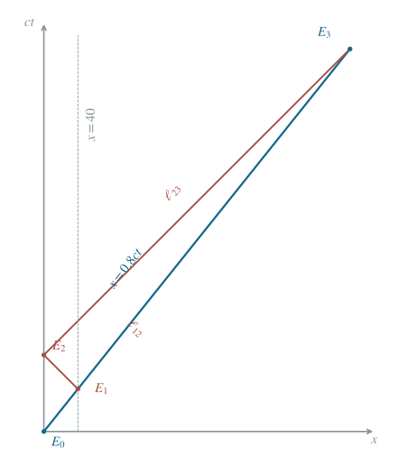

飞船与地球的无线电往返时钟
用四个事件的地球系坐标求空间站钟、地球接收时刻与飞船接收时刻。
1 题目
1.1 物理情境
飞船以恒定速率 沿 飞离地球。地球与远方空间站静止在同一惯性系，两处时钟已按该系同步。飞船经过地球时，地球钟与飞船钟都读 。
1.2 物理过程
飞船钟读 时，飞船恰经过空间站，并立即向地球发无线电报告。地球收到报告后立即沿 方向发出回复，飞船继续匀速前进直到收到回复。
1.3 已知参数和理想化假设
无线电在真空中以速率 传播；飞船及空间站的尺寸、收发延迟与加速过程忽略。地球系时间从 起用分钟计，距离可用光分钟表示。
1.4 求解目标
求飞船经过空间站时空间站钟的读数；地球收到报告时地球钟的读数；飞船收到回复时飞船钟的读数。

横轴为地球系 ，纵轴为地球系 ；事件 的坐标分别为 ，单位均为光分钟。
2 思路与提示
把飞船经过地球、经过空间站、地球收到报告和飞船收到回信依次标成四个时空事件。先在地球系求坐标时间，再换成飞船钟的固有时间。
3 解答展开 / 收起
3.1 飞船经过空间站：先换算固有时间
飞船上同一时钟由 走到 ，所以 分钟是两个相遇事件间的固有时间。 的洛伦兹因子为 。地球系的相应坐标时间为
空间站与地球静止且时钟同步，故空间站在飞船经过时读 。
3.2 报告信号到达地球
设 为发送事件，坐标单位分别为分钟和光分钟。向地球传播的无线电在地球系满足 。令 ，得
因此地球钟在 收到报告。这里光的飞行时间不能直接当作飞船钟的时间。
3.3 回复光线追上飞船
地球在 立即发射回复。此后地球系中回复光线和飞船的世界线分别是 与 。把距离统一用光分钟、时间用分钟，令两者相等：
回复于地球系 追上飞船。验证：从地球回信到相遇，光走 光分钟；同一时段飞船从 光分钟走到 光分钟。
3.4 把最终事件换回飞船钟读数
沿飞船世界线 ，固有时间微元满足 。因速度恒定且两钟在初遇时同时起算，积分得 。也可用洛伦兹变换 ，代入 后化为同一个 。因此接收事件的船钟读数为
另作分段核对：飞船发报告时读 ；其后地球系经过 分钟，对应船钟再走 分钟，合计仍为 。
4 方法与讨论
四个事件分别是初遇、空间站发报、地球收报和飞船收复信。每次读取时钟都在事件发生地点进行；无线电则连接不同地点的事件，需要单独加入传播时间。一般地，若初发报船钟为 ，同一往返过程给出 。本题比值为 ，故 分钟变为 分钟，与逐段计算一致。